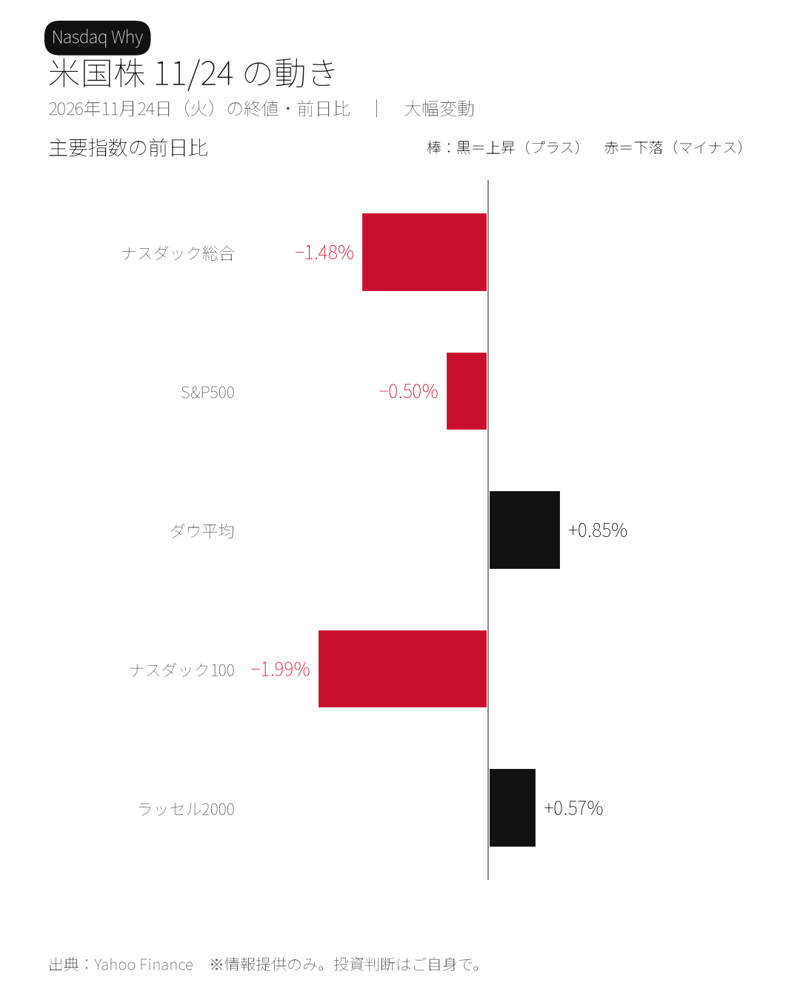
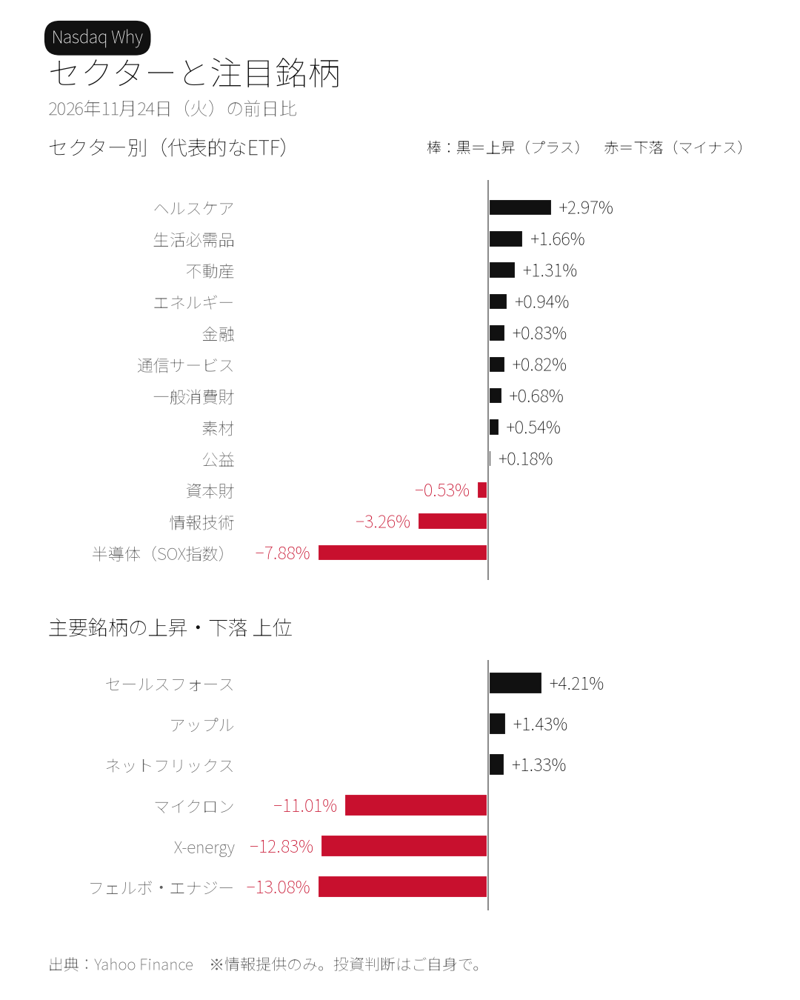

11/24の米国株：エヌビディアCEO復帰で急騰の翌日、半導体株はなぜ急落？
2026年11月24日（火）の米国市場（日本時間の翌朝更新） ｜ 大幅変動
今日の疑問
エヌビディアCEO復帰で急騰の翌日、半導体株はなぜ急落？
前日はフアン氏のCEO復帰で半導体株が急騰しており、その上げを打ち消す売りが出た。マイクロンは格下げと供給過剰への警戒、AMDは株式の再売却の登録が重荷になった。エヌビディアをめぐる調査の行方はまだ分からず、次は調査の進展を確かめたい。

主要指数
| 名前 | 終値 | 前日比 | 騰落率 |
|---|---|---|---|
| ナスダック総合 | 23,733.54 | -356.03 | -1.48% |
| S&P500 | 7,201.09 | -36.08 | -0.50% |
| ダウ平均 | 50,018.70 | +423.39 | +0.85% |
| ナスダック100 | 26,214.17 | -531.93 | -1.99% |
| ラッセル2000 | 2,684.94 | +15.28 | +0.57% |
なぜ動いた？
- 前日のフアン氏復帰を受けた半導体株の急騰が巻き戻され、エヌビディアやAMD、ブロードコムが下げを主導した。（出典：TradingView、Yahoo Finance、24/7 Wall St.、TIKR.com、Yahoo Finance、24/7 Wall St.）
- マイクロンはBNPパリバの格下げと目標株価の引き下げを受けて急落。メモリーの供給過剰リスクも指摘された。（出典：MarketWatch、Crypto Briefing、Yahoo Finance）
- AMDはOpenAIやメタの新株予約権に関わる株式の再売却を登録し、需給の悪化を嫌気した売りが出た。（出典：Yahoo Finance、TIKR.com）
- エヌビディアはフアン氏の復帰後も、規制上の問題や元幹部との関係をめぐる調査が残るとの指摘が出た。（出典：MarketWatch）
深掘り：大きく動いた背景
半導体株が急反落し、半導体（SOX指数）は-7.88%と大きく下げた。前日はエヌビディアのフアン氏がCEOに復帰し、半導体株が軒並み急騰していた。その上げを一日で打ち消す売りが出た形だ。ナスダック100は-1.99%。ダウ平均は+0.85%と上げ、相場は明暗が分かれた。 売りの中心はマイクロンだ。BNPパリバが投資判断を引き下げ、目標株価も下げた。MarketWatchによると、同社のアナリストはメモリーの供給過剰リスクが高まっていると指摘した。価格の決定力が弱まるとの見方が広がり、株価は-11.01%。AMDはOpenAIやメタの新株予約権に関わる株式の再売却を登録し、需給の悪化を嫌気した売りが出た。 エヌビディアも-5.86%と下げた。MarketWatchは、フアン氏の復帰で規制上の問題や元幹部との関係をめぐる調査が片づくわけではないと伝えた。売りはアプライド・マテリアルズやラムリサーチ、KLAなど製造装置株にも広がった。 別の見方もある。マイクロンの利益の伸びはまだ続く、HBM（AI向けの高性能メモリー）の価格改定が支えになるといった強気の分析も出ている。X-energyは原子炉の建設許可を得たのに-12.83%と下げたが、明確な材料は見当たらない。今後はエヌビディアをめぐる調査の行方と、メモリー価格の動きを確かめたい。
セクター
半導体（SOX指数）は-7.88%と急落し、情報技術も-3.26%。ヘルスケアは+2.97%、生活必需品は+1.66%と上げたが、明確な材料は見当たらない。
- 騰落率の高い順：ヘルスケア +2.97%、生活必需品 +1.66%、不動産 +1.31%
- 騰落率の低い順：半導体（SOX指数） -7.88%、情報技術 -3.26%、資本財 -0.53%

注目銘柄
マイクロンは格下げを受けて-11.01%。AMDは-8.86%、インテルは-8.15%と売られた。フェルボ・エナジーは法律事務所による株主向けの調査告知が相次ぐ中で-13.08%。セールスフォースは+4.21%と逆行高。
- 上昇：セールスフォース（CRM）+4.21%、アップル（AAPL）+1.43%、ネットフリックス（NFLX）+1.33%
- 下落：フェルボ・エナジー（FRVO）-13.08%、X-energy（XE）-12.83%、マイクロン（MU）-11.01%
半導体トピック
- マイクロンが台湾とシンガポールでHBMへの投資を加速する。（digitimes、Chosunbiz）
- BNPパリバのアナリストがメモリーの供給過剰リスクの高まりを指摘した。（MarketWatch）
- サムスン電子がAI向けSSD需要を背景に西安のNAND生産を大幅に増やす。（Businesskorea）
関連市場
| 名前 | 終値 | 前日比 | 騰落率 |
|---|---|---|---|
| 米10年債利回り | 4.904% | -0.014pt | ― |
| ドル円 | 159.24 | +0.31 | +0.19% |
| 金先物 | 3,549.70 | -101.70 | -2.79% |
| 原油先物(WTI) | 81.43 | +1.26 | +1.57% |
| ビットコイン | 59,844.64 | -1,366.34 | -2.23% |
米10年債利回りは小幅に低下し4.904%。ドル円は159.24円と円安方向。金先物は-2.79%、ビットコインは-2.23%と下げ、原油先物(WTI)は+1.57%。
今後の注目
- エヌビディアのフアンCEOをめぐる、規制上の問題と元幹部との関係の調査の行方（MarketWatch）
- マイクロンの株価を左右する、デルの決算とメモリー価格の動向（Traders Union）
- 12/9（水） FOMC（米連邦公開市場委員会）の金融政策発表（公式発表）
- フェルボ・エナジーの新規上場をめぐる株主の集団訴訟の動き（openclassactions.com、The National Law Review）
出典（見出し）
- TradingView：Nvidia, AMD and Micron Lead AI Selloff as Chip Stocks Slide（記事）
- Yahoo Finance：Nvidia, AMD, Broadcom lead chip stocks lower as AI trade comes under pressure（記事）
- 24/7 Wall St.：Micron Falls 7% as NVIDIA Pullback Partially Reverses Monday's AI Chip Rally; SanDisk and SK Hynix Drop 6%（記事）
- TIKR.com：AMD Sinks 10%, Nvidia Down 7% as Chip Stocks Give Back Huang Rally, Resale Filing Weighs（記事）
- Yahoo Finance：NVIDIA and Intel Slide 6% as Jensen Huang Comeback Rally Cools; AMD Drops 5%（記事）
- 24/7 Wall St.：Taiwan Semiconductor Rallies 17% as Jensen Huang's Return to NVIDIA Lifts Chip Stocks; Intel Surges 15%, AMD Jumps 8%（記事）
- MarketWatch：Micron’s stock falls as an analyst warns about a future supply glut（記事）
- Crypto Briefing：Micron stock slides as much as 12% after BNP Paribas downgrade and price target cut（記事）
- Yahoo Finance：Micron downgraded, GameStop initiated: Wall Street's top analyst calls（記事）
- Yahoo Finance：AMD Stock Dips Overnight After Nvidia-Triggered Rally: AMD Registers 337M Shares For Resale Tied To OpenAI, Meta Warrants（記事）
- MarketWatch：Nvidia’s stock drops as these major questions loom over Jensen Huang’s return（記事）
- digitimes：Micron steps up HBM investment in Taiwan, Singapore（記事）
- Chosunbiz：Micron accelerates HBM expansion in Singapore and Taiwan（記事）
- Businesskorea：Samsung Electronics to Lift Xi’an NAND Output Fivefold as AI Drives eSSD Demand（記事）
- Traders Union：Micron Technology eyes Dell earnings and chip pricing: Can MU avoid deeper declines?（記事）
- openclassactions.com：Fervo Energy IPO Securities Class Action (FRVO)（記事）
- The National Law Review：Fervo Energy (FRVO) IPO Investors: Kahn Swick & Foti Alerts Share（記事）
データ：Yahoo Finance
📝 note でも読めます（図つき・まとめ）：note.com/nasdaqwhy